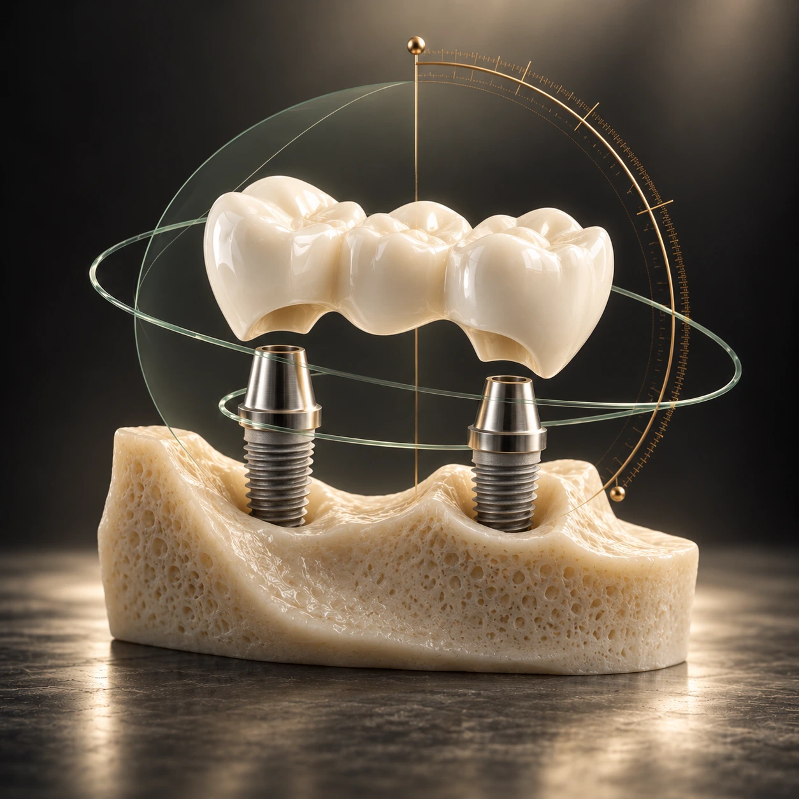
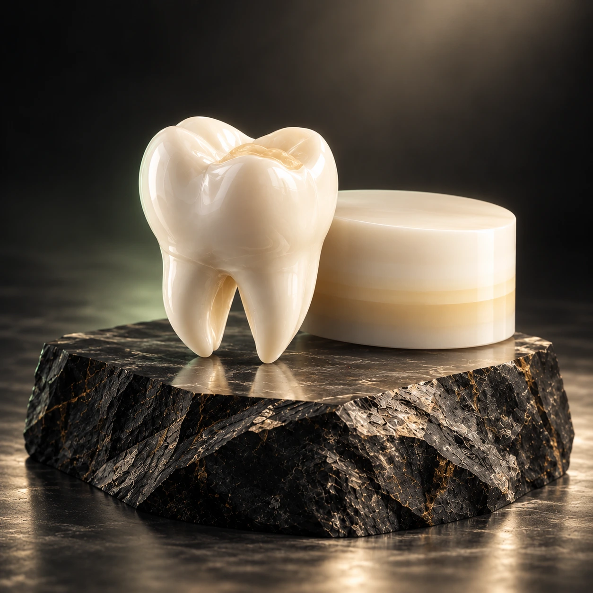
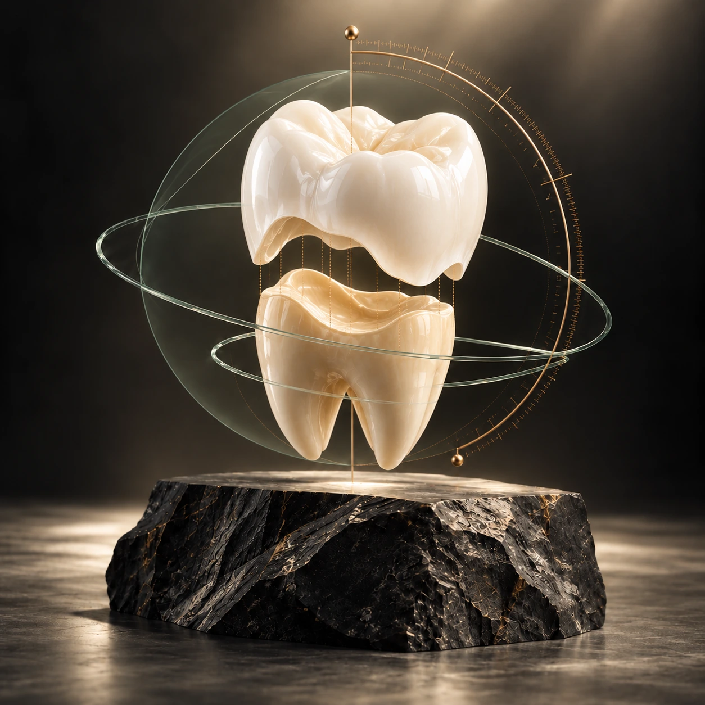
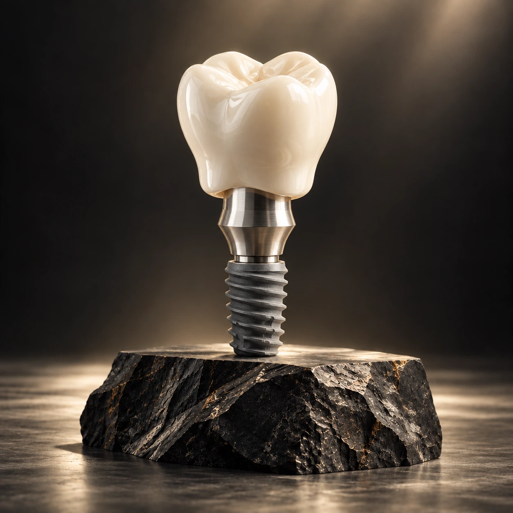
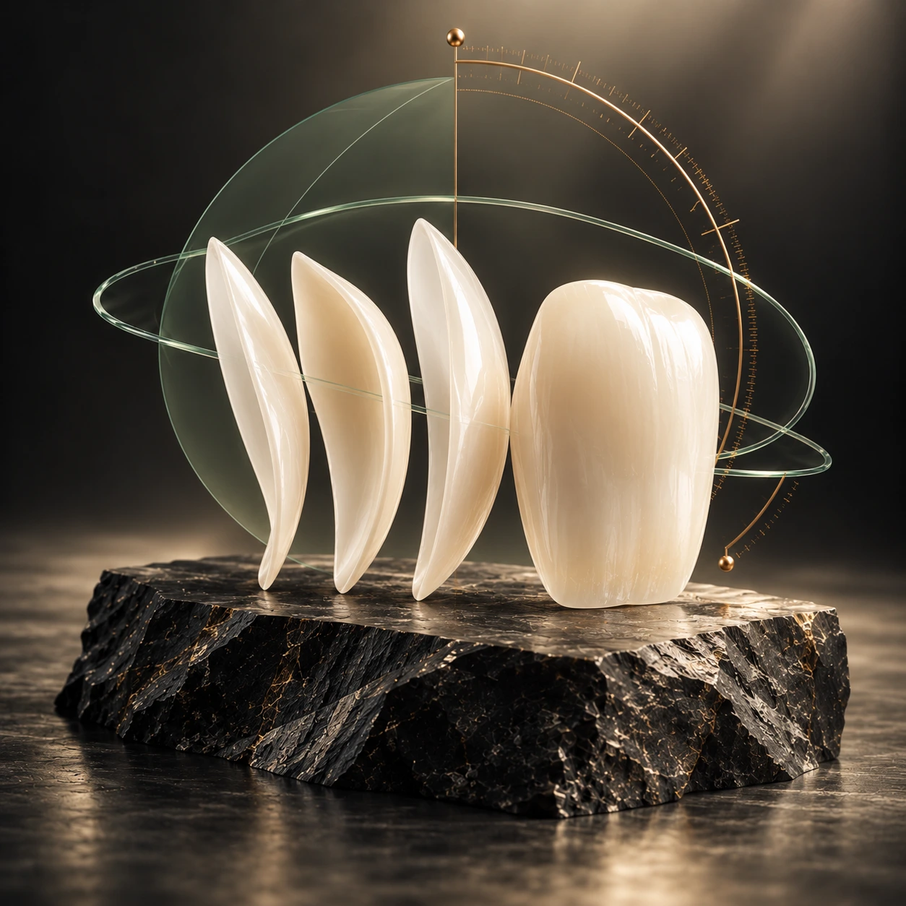
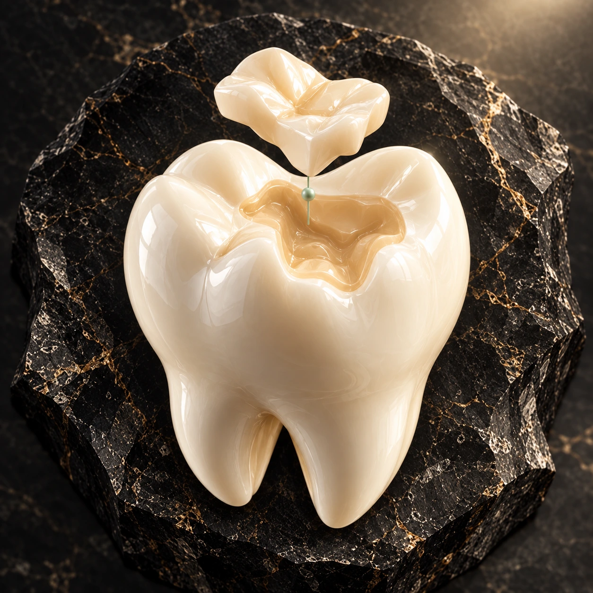
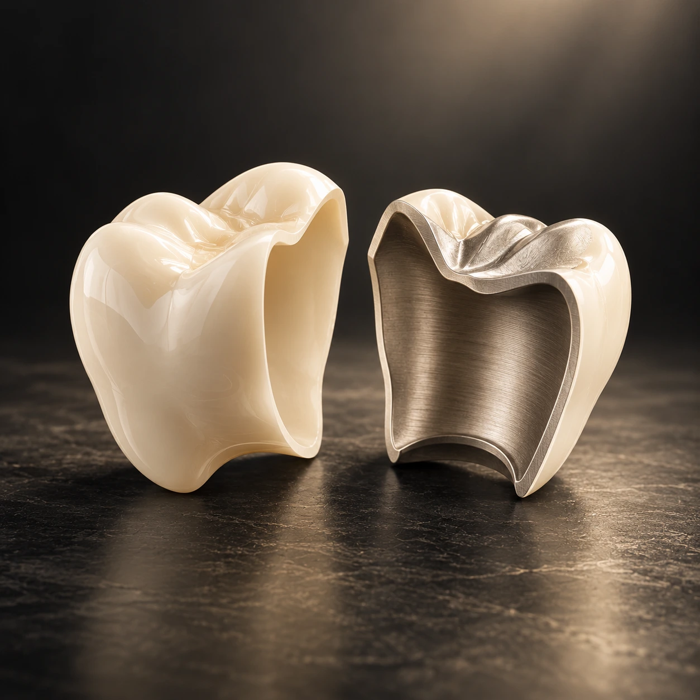
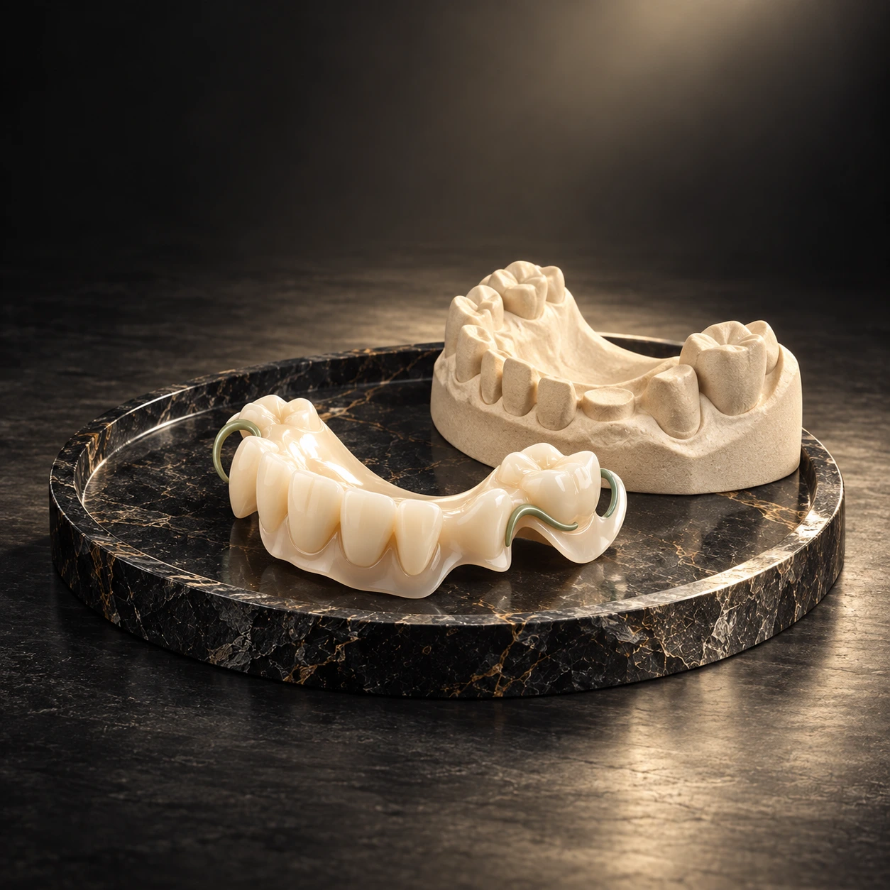
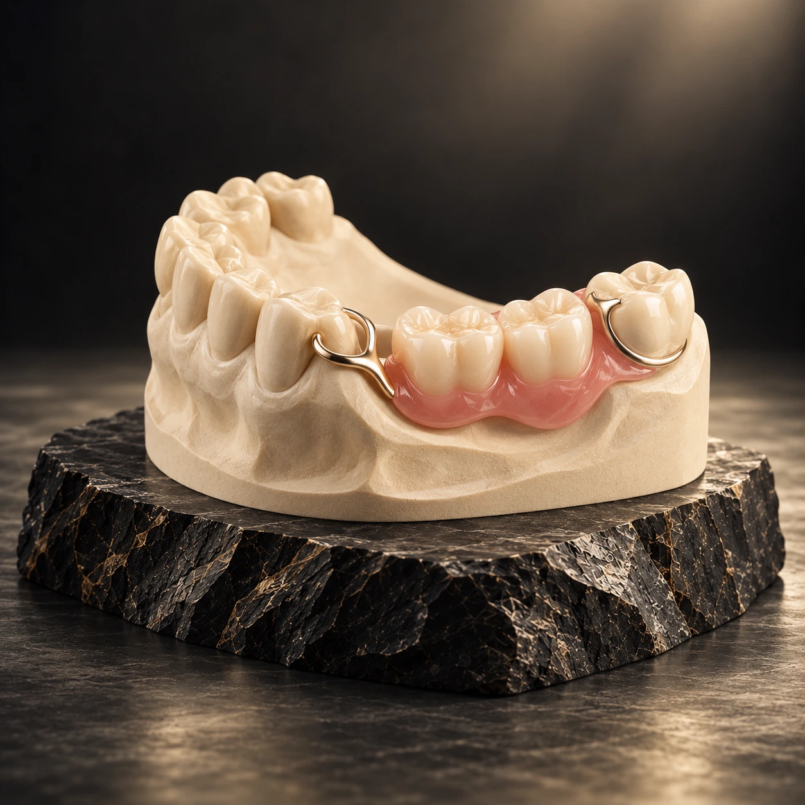
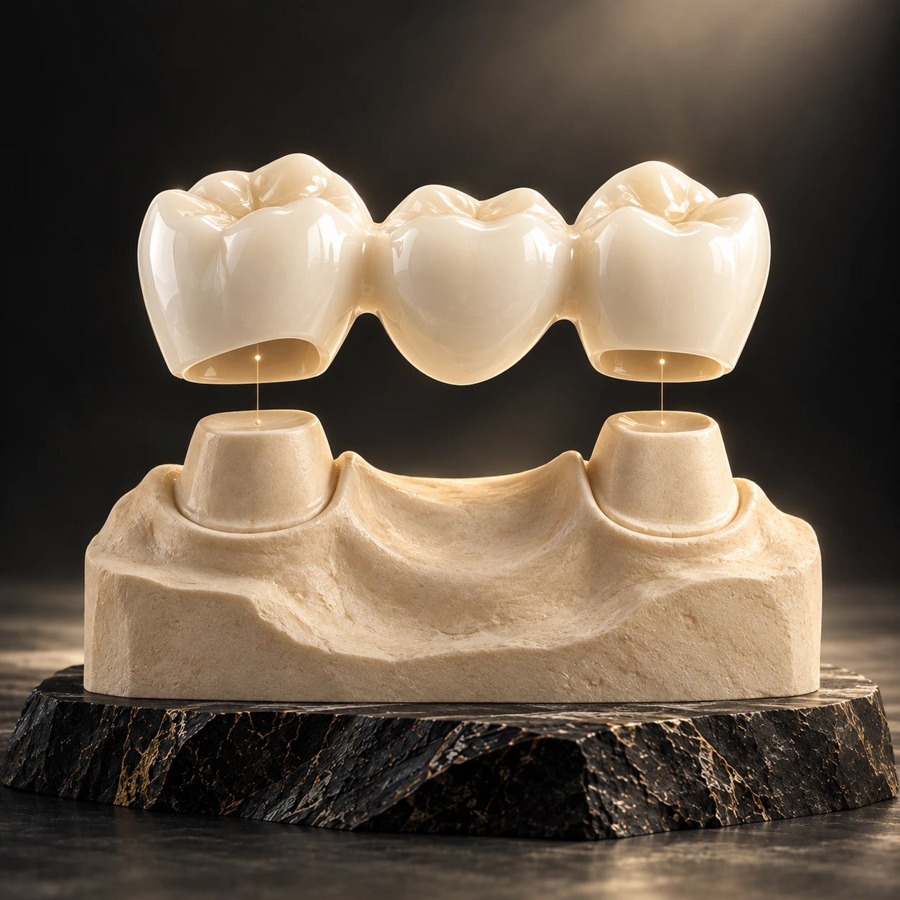

Коронки и протезирование
Ортопедия и протезирование.
Первый экран: эстетическая стоматология, восстановление зубов разными методами и полное восстановление All-on-6.
 Направление К78
Направление К78Направление
Услуги и
информация.
Откройте услугу, чтобы посмотреть описание, подготовку к визиту, рекомендации и стоимость, если она указана в прайсе.
Преимущества
Цифровой дизайн улыбки, восстановление функции челюсти, широкий выбор решений и заранее понятный план лечения/расходов.
Виды лечения
Эстетическая стоматология; несъёмное и съёмное протезирование; протезирование на имплантатах; имплантаты; коронки/мосты; микропротезирование; бюгельные протезы.
Эстетический блок работает со сколами, трещинами, формой/цветом и промежутками. Несъёмные решения: виниры, вкладки, коронки, мосты, протезы на имплантатах. Съёмные: бюгельные, на имплантах, Quattro Ti, иммедиат, пластиночные, нейлоновые, Acry Free. Имплантат замещает корень и позволяет не обтачивать соседние зубы. Микропротезирование керамической вкладкой предлагается при разрушении зуба более чем наполовину.
Цены
Циркониевая коронка от 38 500 ₽; керамический винир от 35 000 ₽; вкладка от 17 000 ₽; коронка на импланте от 55 000 ₽.
Услуги направления
Выберите конкретную услугу

Протезирование на имплантатахТип протеза, материалы и этапы восстановления врач обсуждает с пациентом после диагностики.Подробнее
Безметалловая коронка из диоксида циркония MultilayerВ прайсе указана коронка Multilayer из диоксида циркония; конкретная конструкция определяется планом лечения.от 38 500 ₽Подробнее
Циркониевая коронка с облицовкойВариант коронки и объём подготовки врач согласует после оценки зуба и прикуса.от 44 000 ₽Подробнее
Безметалловая коронка на имплантеКонструкцию на импланте выбирают после оценки клинической ситуации и параметров импланта.от 55 000 ₽Подробнее
Керамический винирПоказания, дизайн и этапы изготовления керамического винира обсуждаются с врачом.от 35 000 ₽Подробнее
Керамическая вкладкаКерамическая вкладка может рассматриваться для восстановления зуба; решение зависит от его состояния.от 17 000 ₽Подробнее
Металлокерамическая коронкаМатериалы и конструкцию коронки врач предлагает после обследования и обсуждения вариантов.Подробнее
Съёмное протезированиеТип съёмной конструкции и адаптацию к ней врач обсуждает после оценки зубных рядов.Подробнее
Бюгельное протезированиеВозможность бюгельной конструкции зависит от состояния зубов и особенностей прикуса.Подробнее
Мостовидный протезСпособы восстановления отсутствующих зубов и опоры конструкции обсуждаются индивидуально.ПодробнееСтоимость · Ортопедия и протезирование
- Безметалловая коронка на диоксиде циркония (Multilayer)от 38 500 ₽
- Безметалловая коронка на цирконе с облицовкойот 44 000 ₽
- Винир керамическийот 35 000 ₽
- Вкладка керамическаяот 17 000 ₽
- Безметалловая коронка на имплантеот 55 000 ₽
Подготовка к визиту
Как проходит консультация
- 01Обсудите запрос
Расскажите врачу, что вас беспокоит и какого результата вы ожидаете.
- 02Пройдите осмотр
Специалист оценит состояние зубов и объяснит, нужны ли дополнительные исследования.
- 03Составьте план
Обсудите последовательность этапов и стоимость рекомендованного лечения.
Частые вопросы
Как узнать стоимость услуги?
Цены, указанные в прайсе, связаны с описаниями отдельных услуг. Полный план и его стоимость врач обсуждает на консультации.
Можно ли прийти с результатами обследований?
Да. Возьмите с собой имеющиеся снимки и документы, чтобы врач мог учесть их при оценке состояния.